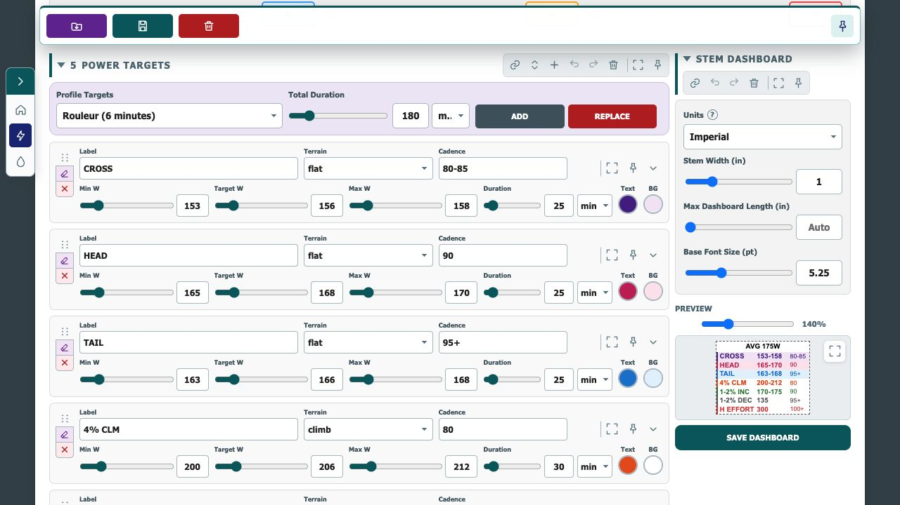
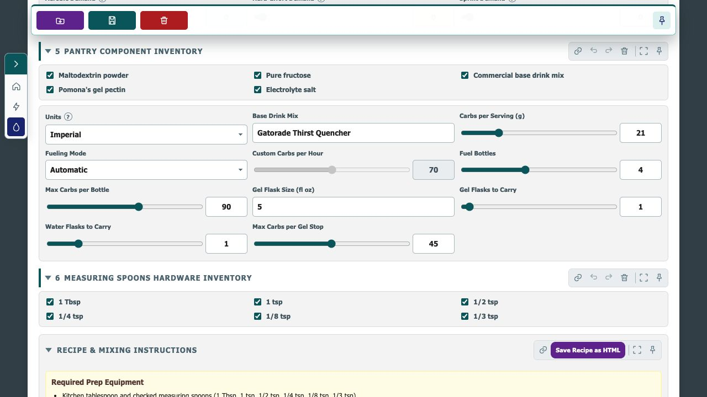

Velo Tools
Plan the effort. Fuel the ride.
Check the riding conditions, build an execution dashboard, then turn the plan into a practical fueling strategy.
Tool Preview
See the ride-planning workspace


Check the riding conditions, build an execution dashboard, then turn the plan into a practical fueling strategy.

